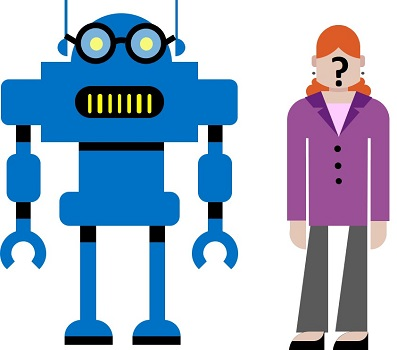

As soluções de visão computacional geralmente exigem uma solução de inteligência artificial (AI) para poder detectar, analisar ou identificar rostos humanos. Ou, por exemplo, suponha que a empresa de varejo Northwind Traders tenha decidido implementar uma “loja inteligente”, na qual os serviços de IA monitoram a loja para identificar os clientes que exigem assistência e direcionar os funcionários para ajudá -los. Uma maneira de realizar isso é executar detecção e análise faciais - em outras palavras, determinar se há alguma faces nas imagens e, se assim for, analise seus recursos.

Suponha que o sistema de loja inteligente que os comerciantes da Northwind deseja criar precisam detectar clientes e analisar seus recursos faciais. No Microsoft Azure, você pode usar Face, parte dos serviços cognitivos do Azure para fazer isso.
Vamos começar criando um Serviços cognitivosRecurso na sua assinatura do Azure.
Observação: Se você já possui um recurso de serviços cognitivos, basta abrir seu Início rápidoPágina no portal do Azure e copie sua chave e terminal para a célula abaixo. Caso contrário, siga as etapas abaixo para criar uma.
Para usar seu recurso de serviços cognitivos, os aplicativos do cliente precisam de seu terminal e chave de autenticação:
cog_key = 'YOUR_COG_KEY'
cog_endpoint = 'YOUR_COG_ENDPOINT'
print('Ready to use cognitive services at {} using key {}'.format(cog_endpoint, cog_key))
Para usar o serviço FACE em seu recurso de Serviços Cognitivos, você precisará instalar o pacote de face do Azure Cognitive Services.
! pip install azure-cognitiveservices-vision-face
Agora que você tem um recurso de serviços cognitivos e o pacote SDK instalado, você pode usar o serviço FACE para detectar rostos humanos na loja.
Execute a célula de código abaixo para ver um exemplo.
from azure.cognitiveservices.vision.face import FaceClient
from msrest.authentication import CognitiveServicesCredentials
from python_code import faces
import os
%matplotlib inline
# Create a face detection client.
face_client = FaceClient(cog_endpoint, CognitiveServicesCredentials(cog_key))
# Open an image
image_path = os.path.join('data', 'face', 'store_cam2.jpg')
image_stream = open(image_path, "rb")
# Detect faces
detected_faces = face_client.face.detect_with_stream(image=image_stream)
# Display the faces (code in python_code/faces.py)
faces.show_faces(image_path, detected_faces)
Cada face detectada recebe um ID exclusivo, para que seu aplicativo possa identificar cada face individual que foi detectada.
Execute a célula abaixo para ver os IDs para mais alguns rostos de compradores.
# Open an image
image_path = os.path.join('data', 'face', 'store_cam3.jpg')
image_stream = open(image_path, "rb")
# Detect faces
detected_faces = face_client.face.detect_with_stream(image=image_stream)
# Display the faces (code in python_code/faces.py)
faces.show_faces(image_path, detected_faces, show_id=True)
O rosto pode fazer muito mais do que simplesmente detectar rostos. Também pode analisar as características e expressões faciais para sugerir idade e estado emocional; Por exemplo, execute o código abaixo para analisar os atributos faciais de um comprador.
# Open an image
image_path = os.path.join('data', 'face', 'store_cam1.jpg')
image_stream = open(image_path, "rb")
# Detect faces and specified facial attributes
attributes = ['age', 'emotion']
detected_faces = face_client.face.detect_with_stream(image=image_stream, return_face_attributes=attributes)
# Display the faces and attributes (code in python_code/faces.py)
faces.show_face_attributes(image_path, detected_faces)
Com base nas pontuações da emoção detectadas para o cliente na imagem, o cliente parece muito feliz com a experiência de compra.
Os IDs da face criados para cada face detectada são usados para identificar individualmente as detecções de face. Você pode usar esses IDs para comparar um rosto detectado com faces detectadas anteriormente e encontrar rostos com recursos semelhantes.
Por exemplo, execute a célula abaixo para comparar o comprador em uma imagem com os compradores em outro e encontre um rosto correspondente.
# Get the ID of the first face in image 1
image_1_path = os.path.join('data', 'face', 'store_cam3.jpg')
image_1_stream = open(image_1_path, "rb")
image_1_faces = face_client.face.detect_with_stream(image=image_1_stream)
face_1 = image_1_faces[0]
# Get the face IDs in a second image
image_2_path = os.path.join('data', 'face', 'store_cam2.jpg')
image_2_stream = open(image_2_path, "rb")
image_2_faces = face_client.face.detect_with_stream(image=image_2_stream)
image_2_face_ids = list(map(lambda face: face.face_id, image_2_faces))
# Find faces in image 2 that are similar to the one in image 1
similar_faces = face_client.face.find_similar(face_id=face_1.face_id, face_ids=image_2_face_ids)
# Show the face in image 1, and similar faces in image 2(code in python_code/face.py)
faces.show_similar_faces(image_1_path, face_1, image_2_path, image_2_faces, similar_faces)
Até agora, você viu que o rosto pode detectar rostos e recursos faciais e pode identificar duas faces semelhantes entre si. Você pode dar as coisas um passo adiante ao suplementar um reconhecimento facialSolução em que você treina cara para reconhecer o rosto de uma pessoa específica. Isso pode ser útil em vários cenários, como marcar automaticamente fotografias de amigos em um aplicativo de mídia social ou usar o reconhecimento facial como parte de um sistema de verificação de identidade biométrica.
Para ver como isso funciona, suponhamos que a Northwind Traders Company deseja usar o reconhecimento facial para garantir que apenas funcionários autorizados no departamento de TI possam acessar sistemas seguros.
Começaremos criando um grupo de pessoaspara representar os funcionários autorizados.
group_id = 'employee_group_id'
try:
# Delete group if it already exists
face_client.person_group.delete(group_id)
except Exception as ex:
print(ex.message)
finally:
face_client.person_group.create(group_id, 'employees')
print ('Group created!')
Agora que o grupo de pessoasexiste, podemos adicionar um pessoaPara cada funcionário, queremos incluir no grupo e, em seguida, registre várias fotografias de cada pessoa para que o rosto possa aprender as características faciais distintas de cada pessoa. Idealmente, as imagens devem mostrar a mesma pessoa em poses diferentes e com diferentes expressões faciais.
Adicionaremos um único funcionário chamado Wendell e registraremos três fotografias do funcionário.
import matplotlib.pyplot as plt
from PIL import Image
import os
%matplotlib inline
# Add a person (Wendell) to the group
wendell = face_client.person_group_person.create(group_id, 'Wendell')
# Get photo's of Wendell
folder = os.path.join('data', 'face', 'wendell')
wendell_pics = os.listdir(folder)
# Register the photos
i = 0
fig = plt.figure(figsize=(8, 8))
for pic in wendell_pics:
# Add each photo to person in person group
img_path = os.path.join(folder, pic)
img_stream = open(img_path, "rb")
face_client.person_group_person.add_face_from_stream(group_id, wendell.person_id, img_stream)
# Display each image
img = Image.open(img_path)
i +=1
a=fig.add_subplot(1,len(wendell_pics), i)
a.axis('off')
imgplot = plt.imshow(img)
plt.show()
Com a pessoa adicionada e fotografias registradas, agora podemos treinar o rosto para reconhecer cada pessoa.
face_client.person_group.train(group_id)
print('Trained!')
Agora, com o modelo treinado, você pode usá -lo para identificar faces reconhecidas em uma imagem.
# Get the face IDs in a second image
image_path = os.path.join('data', 'face', 'employees.jpg')
image_stream = open(image_path, "rb")
image_faces = face_client.face.detect_with_stream(image=image_stream)
image_face_ids = list(map(lambda face: face.face_id, image_faces))
# Get recognized face names
face_names = {}
recognized_faces = face_client.face.identify(image_face_ids, group_id)
for face in recognized_faces:
person_name = face_client.person_group_person.get(group_id, face.candidates[0].person_id).name
face_names[face.face_id] = person_name
# show recognized faces
faces.show_recognized_faces(image_path, image_faces, face_names)
Para saber mais sobre o serviço cognitivo de rosto, consulte o Documentação de rosto